¶
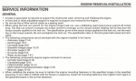
On almost all engines there are things that can be repaired with the engine in the frame and things that require you to pull the engine. To get down into the lower guts of most engines you must take the engine out of the frame. What could be easier? Trouble is the frame must fit the engine like a glove. That means it has to fit tight. Most shop manuals will tell you what can and cannot be done with the engine in the frame.The drill is this.
- Disconnect the battery. Perhaps even remove it from the machine so there are no accidents.
- Remove any Fairing Parts and/or Windshield.
- Remove the gas tank and seat.
- Drain the oil. Remove the oil filter.
Then in no particular order.
- Remove the Radiator and hoses.
- Remove any engine breather, smog or vent hoses.
- Loosen any bolts that might be hard to loosen when the frame is not holding the engine.
- Disconnect the clutch cable and the compression release cable if it has one.
- Remove the exhaust header pipe(s). You might be able to leave the muffler attached or not, each bike is different.
- Unplug all the electronic connections. Make sure you get ALL of them.
- Remove the carburetor(s). You might be able to leave the carburetor(s) in the frame attached to the air box or you might have to remove them completely. Each machine is different.
- Remove all the mounting bolts but one. Mark each mounting bolt and spacer. I use simple marks with a black felt tip pen. Like "FB" for front bottom or "top rear" for the top rearmost mount. I also put any spacer or washer on the bolt and then screw the nut on so I know where it goes and don't loose it.
- If the frame and engine have lots of oil, radiator, electrical lines and wires and hoses and tubes. Take a bunch of digital camera pictures. This can be a real lifesaver on reassembly.
- Remove the last bolt and remove the engine. WOW, that is so easy to say. Not so easy to do.
Usually the engine only comes out one way, either to the right or to the left or straight down. For single cylinder engines I like to sort of lay on top of the frame and use my arms to move the engine around. This saves my back. Seeing how I'm getting a bit old, I put a piece of wood on a jack, set the engine on it and move it up close to the frame. Then I lift it in. Younger people with stronger backs may be able to just lift it in or out without the jack.
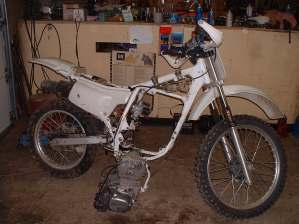 |
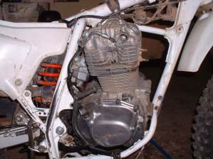 |
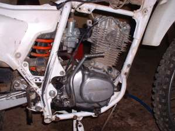 |
If the engine is a stressed member of the frame, you may be able to use a jack to raise and lower the engine to slide it into the frame.
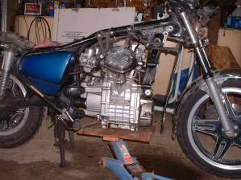 |
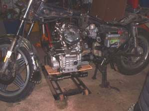 |
Some frames give you an additional problem. The lower rear mounting bolt is also the swing arm axle. When you pull the bolt the frame and the swing arm separate. I usually use the swing arm axle in one side and a short bolt or big screwdriver in the other side of the frame to hold the frame together until I get the engine in and the rear mounting holes lined up. Then I tap the axle in and it pushes the screwdriver out the other side.
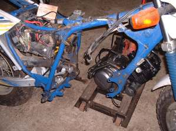 |
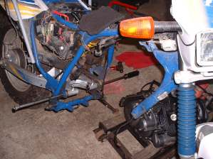 |
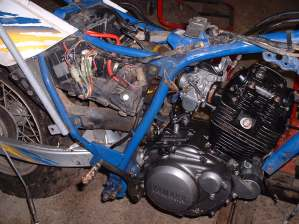 |
On some engines you remove a frame tube and use a jack to lower the engine down and out of the frame. This can be quite a problem because the bottom of an engine is not necessarily smooth and flat. It can be very, how would you say pointy? To fix this just cut a bunch of wood blocks out of one by twos and two by fours, nail them to a piece of plywood to match the underside of your engine then you can jack up your engine safely. You will also have to figure out some way to support the frame because many bikes these days do not have a center stand. A few ropes on the handlebars, a few pulleys and a roof beam can help here. If you can get access to an auto engine hoist. They work well too.
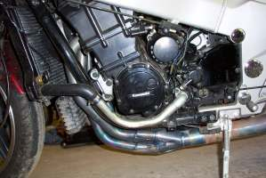 |
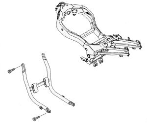 |
Over all, you will need several jacks, a good selection of bits of wood and few big, long screwdrivers and pry bars. A word on pry bars. Only pry on parts of the engine that are thick and strong. You can punch a hole in a very expensive crankcase very easily. The fit on motorcycle frame to motorcycle engine can go from somewhat loose to very, very tight. Remember, the engine did fit in there. You may have to wiggle, jiggle, move back and forth, up and down, side to side. Put it in at an angle, tip it forward then an eighth of an inch to the right, slide it back just a bit and BANG it is in.
Sometimes it really helps to have an extra person or two to help. At least I have been told that. No one ever seems to be around when I need help so I just jack it up, slide it over, wiggle it, jiggle it, pry it a bit and sooner or later in it goes or out as the case may be.
Some people like to lay the bike on it's side on a cushion. Let the engine come out and then tilt the bike back up. I won't say I have not sinned like this (We all fall short sooner or later.) but I will say it does not work that well.
On reassembly just do the reverse of what you did to get the engine out of the frame. Check the shop manual and see if there is a sequence to retightening the bolts If there is, FOLLOW IT! Also, use the correct torque on each bolt. If you don't know what it is, look in your shop manual.

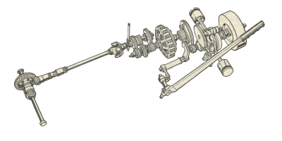 |
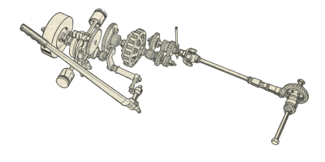 |
Copyright © 1999-2014 dansmc.com. All rights reserved.